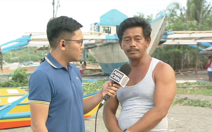
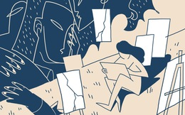

Hotline:
Hotline:

TT Duterte không trách TQ dù chỉ 1 lời, thuyền trưởng tàu Philippines bị đâm chìm tiết lộ điều ông kỳ vọng từ chính phủ
Lần đầu tiên phá vỡ im lặng sau vụ tàu Philippines bị đâm chìm trên Biển Đông, Tổng thống Duterte đã có phát biểu mềm mỏng bất ngờ và không hề nhắc tới Trung Quốc.
"Ông bưu chính" chuyển phong bì doanh nghiệp đến tay Trưởng đoàn thanh tra Bộ Xây dựng

Trường chuyên, du học, bằng tiến sĩ và nỗi đau câm lặng của cô bé 15 tuổi
Chuyên gia quốc tế: Khóa đào tạo phi công tại Mỹ mang lại cho VN khả năng chiến lược mới
Bản di chúc viết sẵn của mẹ "chú lính chì" Thiện Nhân
Tin hot
- CẬP NHẬT: Chiến sự nóng, toàn bộ trung tâm tình báo ở Al-Sweida bị bắt sống - QĐ Syria thiệt hại nặng
- Sau thông cáo bị "xóa vội", TQ ra tuyên bố mới về vụ tàu Philippines bị đâm chìm: Lược bỏ chi tiết "quan trọng"?
- Bộ trưởng Quốc phòng Philippines quay ngoắt thái độ sau khi Tổng thống Duterte nói vụ tàu cá 'chỉ là tai nạn nhỏ'
- Gia tài của Mai Tài Phến - diễn viên trẻ 9x bị đồn yêu Mỹ Tâm có những gì?
-
 Curacao thua trận, đối mặt với thực tại phũ phàng chỉ ít ngày sau khi thắng Việt Nam
Curacao thua trận, đối mặt với thực tại phũ phàng chỉ ít ngày sau khi thắng Việt Nam
- Châu Nhuận Phát: Đại gia nghìn tỷ vẫn bủn xỉn và triết lý tiêu tiền khiến triệu người phải suy nghĩ
- Thanh niên giết hại bạn gái xinh đẹp trong phòng trọ đã ra đầu thú
27°C
/ 24°C - 31°C| Vàng SJC | 37,500 | 0.54% |
| SGD | 16,812.5 | -0.39% |
| HKD | 2,935.69 | -0.39% |
| Vàng SJC | 37,500 | 0.54% |
| SGD | 16,812.5 | -0.39% |
| HKD | 2,935.69 | -0.39% |
-
Người xóm trọ cho biết cô gái xinh đẹp bị sát hại và bạn trai thường xích mích, đánh nhauPháp luậtMột số người dân sinh sống tại khu trọ của cô gái Vũ Thị Quỳnh T. cho biết, giữa nạn nhân và bạn trai thường xảy ra xích mích và thậm chí đánh nhau.
-
 Quân Assad tự chuốc họa vào thân, Nga cũng không thể cứu?Quốc tếMột chốt chặn an ninh của Thổ Nhĩ Kỳ ở khu vực Idlib của Syria đã bị tấn công bằng các đợt bắn phá bằng súng cối và đạn pháo từ một khu vực được kiểm soát bởi quân chính phủ Syria. Cuộc tấn công này gây ra tổn thất về vật chất nhưng không có thương vong xảy ra, Bộ Quốc phòng Thổ Nhĩ Kỳ hồi cuối tuần vừa rồi cho biết.
Quân Assad tự chuốc họa vào thân, Nga cũng không thể cứu?Quốc tếMột chốt chặn an ninh của Thổ Nhĩ Kỳ ở khu vực Idlib của Syria đã bị tấn công bằng các đợt bắn phá bằng súng cối và đạn pháo từ một khu vực được kiểm soát bởi quân chính phủ Syria. Cuộc tấn công này gây ra tổn thất về vật chất nhưng không có thương vong xảy ra, Bộ Quốc phòng Thổ Nhĩ Kỳ hồi cuối tuần vừa rồi cho biết. -
Thua thảm kình địch ĐNÁ ở giải châu lục, Việt Nam bị CĐV đối thủ mỉa mai thậm tệThể thao Việt NamThắng lợi với tỉ số 7-5 trước Việt Nam, các CĐV Indonesia tỏ rõ sự vui mừng, đồng thời không quên đưa ra những nhận xét cho rằng họ vừa đánh bại một đối thủ quá yếu.
-
Hành trình Từ Trái Tim: Không ngờ đây lại là cuốn sách người dân miền biển muốn tặng con mình!Hành trình từ trái timNhững tưởng người dân miền biển ở huyện đảo Vân Đồn, Quảng Ninh cần những tri thức "thực dụng" hơn phục vụ việc mưu sinh trước mắt, nhưng thật bất ngờ, cái tên họ nhắc tới lại là Đắc Nhân Tâm.
Đáng chú ý
Cán bộ Phòng chống tham nhũng của Thanh tra Bộ Xây dựng có được đi thanh tra?
Huyền thoại Michel Platini từng nhận hối lộ, mất ghế Chủ tịch UEFA thế nào?
Vụ TNGT thảm khốc ở Hoà Bình qua lời kể của những người tới hiện trường đầu tiên"
Nỗi sợ hãi: Sau 1 tháng cô gái trẻ soi gương thấy da toàn thân trắng "lạ"
Góc nhìn
Có nhiều lí do để một người không uống một giọt rượu bia nào, nhưng vẫn có nồng độ cồn trong máu và hơi thở, như các trường hợp sử dụng thuốc uống, nước súc miệng, thực phẩm lên men, hoa quả chín quá mức.
Bác sĩ Trần Văn Phúc
BV Đa khoa Xanh Pôn, Hà Nội
Ở ngày cuối cùng đó, tôi muốn được ở bên những người tôi yêu thương nhất, để tôi biết rằng đến tận giây phút cuối cùng, tôi không cô đơn mà vô cùng hạnh phúc.
MC Thảo Vân
-
Cô giáo ở Hà Nội tát bé hơn 2 tuổi sấp mặt, tụ máu môi, bế ra góc khuất cameraThời sựSau khi đón con từ Trường Mầm non Ecokids về, chị Linh (Hà Nội) thấy mặt con bầm tím với vết lằn 5 ngón tay, tụ máu môi... và nguyên nhân được xác định do cô giáo tát.
-
 Trâu rừng húc văng sư tử lên không để cứu bạn, nỗ lực này có được đền đáp?Khám pháHai lần nỗ lực giải cứu của trâu rừng dũng cảm liệu có giúp cho đồng loại của nó thoát khỏi bầy sư tử háu đói?
Trâu rừng húc văng sư tử lên không để cứu bạn, nỗ lực này có được đền đáp?Khám pháHai lần nỗ lực giải cứu của trâu rừng dũng cảm liệu có giúp cho đồng loại của nó thoát khỏi bầy sư tử háu đói? -
Hành động đẹp của người Hong Kong sau biểu tình khiến thế giới ngưỡng mộQuốc tếNgười biểu tình Hong Kong thức trắng đêm để dọn sạch đám rác mà họ để lại, đảm bảo không còn một cọng rác nào trên đường vào sáng hôm sau.
-
Vụ vây xe cảnh sát ở Đồng Nai: Người khâu 13 mũi nói "bị cảnh sát cầm ghế phang rách trán"Pháp luậtTheo ông Hải, khi ông can ngăn cãi vã giưa ông Lương và ông Hiền thì bị người cảnh sát đi sau cùng đấm vào mặt, rồi người này cầm cái ghế phang xuống đầu khiến ông bị rách trán.
Được trả tự do, cựu Chủ tịch UEFA Platini tươi cười rời đồn cảnh sát tại Paris
Các giải khác
Sau 15 tiếng tại đồn cảnh sát tại Nanterres, ngoại ô thành phố Paris, cựu Chủ tịch UEFA Platini đã được trả tự do.

Nhà báo Trần Mai Anh: Nỗi đau, nước mắt, oan ức, bình an và tình yêu vô điều kiện của Thiện Nhân
Tàu chiến Nga chất đầy tên lửa áp sát Venezuela: "Gấu Nga đang vuốt râu hùm chú Sam"?
Cô giáo ở Hà Nội tát bé hơn 2 tuổi sấp mặt, tụ máu môi, bế ra góc khuất camera
title='Tiên tri: Trung Quốc sẽ "hất cẳng" Mỹ, thống nhất Đài Loan trong năm 2019?'
Thời sự
Tổng Bí thư, Chủ tịch nước xin phép không dự cuộc tiếp xúc cử tri sáng nay do bận công tác
Thời sự
Tổng Bí thư, Chủ tịch nước xin phép không dự cuộc tiếp xúc cử tri sáng nay do bận công tác
Thời sự
Tổng Bí thư, Chủ tịch nước xin phép không dự cuộc tiếp xúc cử tri sáng nay do bận công tác
Thời sự
Tổng Bí thư, Chủ tịch nước xin phép không dự cuộc tiếp xúc cử tri sáng nay do bận công tác
Thời sự
Tổng Bí thư, Chủ tịch nước xin phép không dự cuộc tiếp xúc cử tri sáng nay do bận công tác
Thời sự
Tổng Bí thư, Chủ tịch nước xin phép không dự cuộc tiếp xúc cử tri sáng nay do bận công tác
Thời sự
Tổng Bí thư, Chủ tịch nước xin phép không dự cuộc tiếp xúc cử tri sáng nay do bận công tác